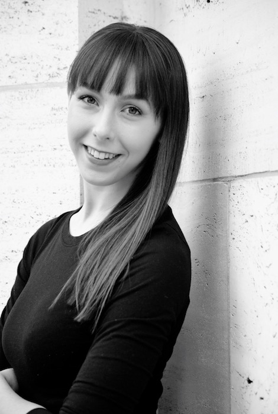

Lauren Russo
Dancer - Choreographer - Model - Artist
Lauren Russo is a student in the Alvin Ailey/Fordham Bachelors of Fine Arts (BFA) program working toward a dual major in Dance and Economics. She has danced under Darrell Grand Moultrie, Matthew Rushing, Ronni Favors, Dexandro Montalvo and others through
various performances such as “Memoria” and Jaclyn Buglisi’s “9/11 Table of Silence”. She is a recipient of the Jogues Scholarship (2014-2017) as well as the Robert E Campbell Scholarship (2016-2017) for academic excellence.
Alvin Ailey
London Contemporary Dance School
Modeling